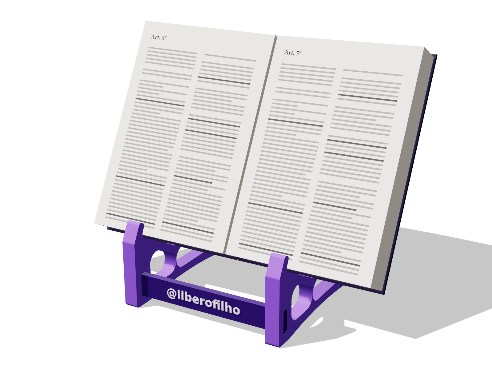
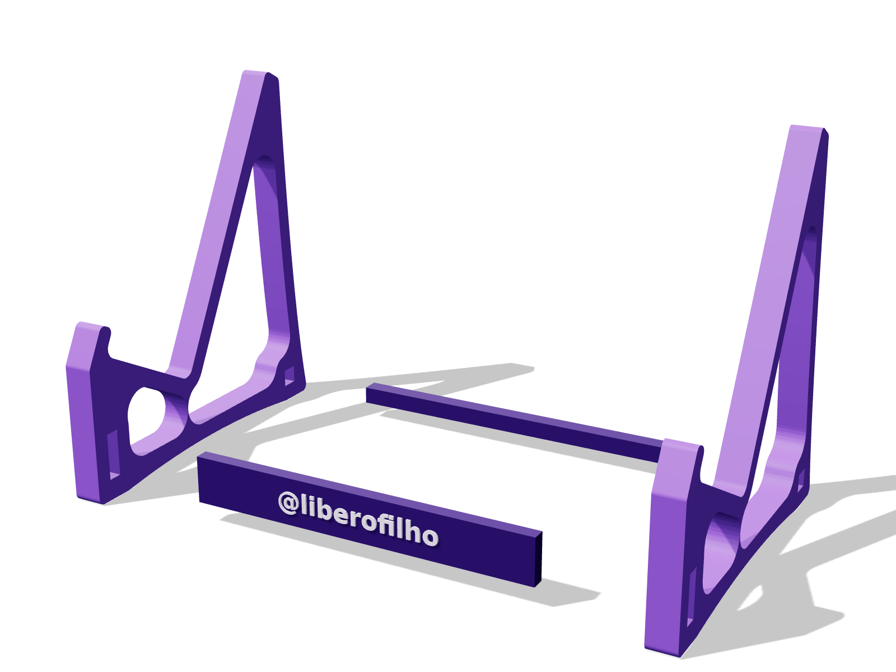

Impressoras, orçamentos, impressão, montagem, envio e quanto aguenta. Tudo para produzir e vender.

Uso normal: qualquer Vade Mecum, com muita folga. O mais pesado (Saraiva, ~2.700 páginas) tem 2,5–3 kg. A conta abaixo usa 3 kg apoiados numa lateral só, que é o pior caso.
| Situação | Esforço no ponto mais exigido | Folga |
|---|---|---|
| Vade Mecum de 3 kg | ~2 MPa (o PLA impresso aguenta ~40 MPa) | 15–20× |
| Livro + cotovelo apoiado (~6 kg) | ~4 MPa | ~10× |
| Quebra do aparador, na conta | só acima de ~40 kg concentrados | |
| Ponto fraco | Como evitar |
|---|---|
| Encaixe folgado: o suporte "dança" para os lados | Ajuste a folga no primeiro teste; se ficar frouxo, uma gota de cola em cada encaixe |
| Calor: PLA amolece acima de ~55 °C (carro, janela com sol) | Use PETG para quem vai deixar no carro ou perto da janela |
| Camadas mal grudadas (impressão fria ou úmida) | Filamento seco, temperatura certa, 2–3 paredes |
| Queda no chão com o livro em cima | Pode trincar a aba; é o mesmo risco de qualquer peça plástica |
As contas são de engenharia (resistência do material e forma da peça), não de um ensaio. O teste acima é o que confirma.
A lateral mede 185 × 193 mm: a mesa precisa ter pelo menos ~200 × 200 mm. O @ em outra cor não exige impressora multicolor (basta uma pausa para trocar o filamento).
| Impressora | Mesa | Preço (aprox.) | Para quem |
|---|---|---|---|
| Creality Ender-3 V3 SE ver no Mercado Livre › | 220 × 220 | R$ 1.550–2.000 | Gastar menos. Pede mais ajuste. |
| Bambu Lab A1 RECOMENDADA ver no Mercado Livre › | 256 × 256 | R$ 2.800–3.600 | Vender em quantidade: ~2× mais rápida, falha menos. |
| Anycubic Kobra 3 V2 Combo ver no Mercado Livre › | 250 × 250 | R$ 3.600–3.800 | Já vem com 4 cores (o @ sai colorido sem pausa). |
| Bambu Lab A1 mini | 180 × 180 | R$ 2.100–2.500 | Não serve: a lateral não cabe. |
| Impressora | Suportes por dia | Lucro/unid. | Se paga em |
|---|---|---|---|
| Ender-3 V3 SE (~R$ 1.750) | 2–3 | ~R$ 60 | ~30 suportes |
| Bambu A1 (~R$ 2.900) | 4–5 | ~R$ 60 | ~50 suportes |
Preços vistos em buscas de outubro de 2026, em datas e lojas diferentes. Os links abrem a busca já ordenada do mais barato para o mais caro.
Serviços de impressão 3D cobram por peso, por hora de máquina ou por peça, quase sempre com valor mínimo. Para este suporte (4 peças, ~130 g, ~9 h), espere algo entre R$ 60 e 150 por conjunto. Serve para validar a venda nos primeiros pedidos, mas come quase todo o lucro.
| Item | Valor (aprox.) |
|---|---|
| 3 rolos de PLA 1 kg: lilás ou roxo médio (laterais), roxo escuro (placa) e branco (o @). ver › | R$ 300–400 |
| Cola instantânea (gel), espátula, lixa fina e alicate de corte | R$ 40–60 |
| 20 caixas de papelão ~22 × 22 × 6 cm + plástico bolha | R$ 60–90 |
| Total do kit | ≈ R$ 400–550 |
Um rolo de 1 kg faz ~7 suportes. Os 3 rolos rendem ~15–20 suportes (o roxo das laterais acaba primeiro).
| Item | Valor |
|---|---|
| Filamento (~130 g a R$ 110/kg) | R$ 14 |
| Energia (~9 h a 120 W) | R$ 1 |
| Desgaste da impressora (bico, mesa, peças) | R$ 6 |
| Peças que falham (~10%) | R$ 2 |
| Embalagem e cartão de montagem | R$ 5 |
| Seu tempo (conferir, embalar) | R$ 5 |
| Custo por suporte | ≈ R$ 33 |
| Canal | Preço | Taxas | Lucro |
|---|---|---|---|
| Direto (Instagram + Pix) | R$ 99 | — | ≈ R$ 66 |
| Mercado Livre (Clássico, ~13%) | R$ 119 | ≈ R$ 16 | ≈ R$ 70 |
| Shopee (~20% + taxa fixa) | R$ 119 | ≈ R$ 28 | ≈ R$ 58 |
| Arquivo | Qtd. | Medidas | Cor sugerida |
|---|---|---|---|
| lateral.stl | 2 | 185 × 193 × 15 mm | lilás ou roxo médio |
| placa.stl | 1 | 180 × 24 × 8 mm | roxo escuro + @ branco |
| travessa.stl | 1 | 180 × 9 × 9 mm | roxo escuro |
| Item | Valor |
|---|---|
| Material | PLA (210 °C, mesa 60 °C) ou PETG (240 °C, mesa 75 °C) |
| Camada | 0,28 mm (econômica) ou 0,2 mm (acabamento melhor) |
| Paredes / preenchimento | 2 paredes e 15% giroide (econômica) · 3 paredes e 20% (reforçada) |
| Suportes / aba (brim) | Não precisa |
| Orientação | Tudo deitado, como o STL vem. Placa com o @ para cima. |
Tempos medidos no PrusaSlicer para impressora comum (60–80 mm/s). Na Bambu A1 ou na Kobra 3 caem mais ou menos pela metade.

Encaixe duro demais: lixe de leve a ponta da placa ou da travessa. Folgado: uma gota de cola resolve (ou diminua a folga no arquivo).
O suporte vai desmontado, numa caixa chata. Assim o frete fica barato e as peças não quebram.
| Canal | Como funciona |
|---|---|
| Venda direta | Correios PAC ou Sedex. Simule no site dos Correios com 22 × 22 × 6 cm e 0,4 kg e cobre o frete à parte (ou embuta no preço). |
| Mercado Livre | Mercado Envios: acima de R$ 79 o frete é grátis para o comprador e você paga uma parte com desconto. Cadastre as medidas da caixa no anúncio. |
| Shopee | Envio pela Shopee: imprima a etiqueta e poste na agência ou ponto de coleta. |
Valores de frete aproximados: variam com a distância e mudam com frequência. Simule sempre antes de fechar o preço.